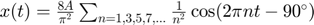

Práctica 7: Series de Fourier en tiempo continuo
* Moreno Castro José Pablo * Pedraza Ocampo Eduardo * Portillo Martínez Carolina * Reyes Alvarez Angel
Contents
Problema 1
La serie de fourier exponencial completa es y la compacta es 
A = 1; T = 2; f0 = 1 / T; N = 8; % Cambia este valor a la cantidad de armónicos deseada t = linspace(-5 * T, 5 * T, 1000); x_t = (8 * A / pi^2) * cos(2 * pi * 1 * f0 * t - pi/2); for n = 3:2:2*N-1 x_t = x_t + (8 * A / (pi^2 * n^2)) * cos(2 * pi * n * f0 * t - pi/2); end % Crea una figura más grande con 3 filas y 2 columnas figure('Position', [100, 100, 1000, 800]); % Gráfica de la Serie de Fourier subplot(3, 2, 1); plot(t, x_t, 'LineWidth', 2); % Línea más gruesa xlabel('t'); ylabel('x(t)'); title('Serie de Fourier (5 Repeticiones)'); grid on; % Genera la señal cuadrada manualmente x_original = zeros(size(t)); for i = 1:numel(t) if sin(2 * pi * f0 * t(i)) >= 0 x_original(i) = A; else x_original(i) = -A; end end % Gráfica de la Señal Original y Serie de Fourier subplot(3, 2, 2); plot(t, x_t, 'b', 'LineWidth', 2); % Línea más gruesa y color azul hold on; plot(t, x_original, 'r', 'LineWidth', 2); % Línea más gruesa y color rojo xlabel('t'); ylabel('x(t)'); title('Señal Original y Serie de Fourier (15 Armónicos)'); legend('Serie de Fourier', 'Señal Original'); grid on; % Error (Diferencia entre Señal Original y Serie de Fourier) error_t = x_original - x_t; subplot(3, 2, 3); plot(t, error_t, 'g', 'LineWidth', 2); % Línea más gruesa y color verde xlabel('t'); ylabel('Error'); title('Error (Diferencia entre Señal Original y Serie de Fourier)'); grid on; % Energía del Error E_error = trapz(t, error_t.^2); subplot(3, 2, 4); plot(t, error_t.^2, 'm', 'LineWidth', 2); % Línea más gruesa y color magenta xlabel('t'); ylabel('Energía'); title(['Energía del Error = ' num2str(E_error)]); grid on; % Espectro de Magnitud (15 Armónicos) frequencies = 0:f0:(N-1)*f0; % Ajusta el rango de frecuencias magnitudes = (8 * A / pi^2) * (1 ./ (1:2:2*N-1)).^2; subplot(3, 2, 5); stem(frequencies, magnitudes, 'b', 'LineWidth', 2); % Línea más gruesa y color azul xlabel('Frecuencia (Hz)'); ylabel('Magnitud'); title('Espectro de Magnitud (15 Armónicos)'); grid on; % Espectro de Fase (15 Armónicos) phases = ones(1, N) * (-pi/2); subplot(3, 2, 6); stem(frequencies, phases, 'b', 'LineWidth', 2); % Línea más gruesa y color azul xlabel('Frecuencia (Hz)'); ylabel('Fase (rad)'); title('Espectro de Fase (15 Armónicos)'); grid on; sgtitle('Análisis de Serie de Fourier');
Problema 2
La serie de fourier exponencial completa es  y la compacta seria
y la compacta seria
% Parámetros de la señal T = 2 * pi; % Período fundamental (2*pi/ω0) N = 15; % Número de armónicos t = linspace(0, 5*T, 1000); % Intervalo de tiempo para graficar x = zeros(size(t)); % Inicializa x con ceros % Cálculo de la serie de Fourier for n = 1:N x = x + (1 / (2 * n - 1)) * cos((2 * n - 1) * t); end x = (2 / pi) * x + 1/2; % Cálculo del error % error = abs(x - (1/2 + (2/pi) * cos(t))); % error_energy = sum(error.^2); % Cálculo del error error = abs(x - (1/2 + (2/pi) * cos(t))); error_energy = trapz(t, error.^2); % Crear una figura más grande con 3 filas y 2 columnas figure('Position', [100, 100, 1000, 800]); % 1. Gráfica de la serie de Fourier subplot(3, 2, 1); plot(t, x, 'r', 'LineWidth', 2); title('Serie de Fourier (15 armónicos)'); xlabel('Tiempo'); ylabel('x(t)'); % 2. Gráfica de la señal y la serie de Fourier (para 15 armónicos) subplot(3, 2, 2); plot(t, x, 'r', 'LineWidth', 2); hold on; plot(t, 1/2 + (2/pi) * cos(t), 'b', 'LineWidth', 2); title('Señal y Serie de Fourier (15 armónicos)'); xlabel('Tiempo'); ylabel('x(t)'); legend('Serie de Fourier', 'Señal original'); % 3. Gráfica del error subplot(3, 2, 3); plot(t, error, 'g', 'LineWidth', 2); title('Error entre la Serie de Fourier y la Señal original'); xlabel('Tiempo'); ylabel('Error'); % 4. Gráfica de la energía del error subplot(3, 2, 4); bar(1, error_energy, 'c'); title('Energía del error'); % 5. Espectro de magnitud subplot(3, 2, 5); frequencies = 1:2:2*N-1; % Frecuencias de los armónicos amplitudes = 4./(pi*frequencies); stem(frequencies, amplitudes, 'k', 'LineWidth', 2); title('Espectro de Magnitud (15 armónicos)'); xlabel('Frecuencia'); ylabel('Amplitud'); % 6. Espectro de fase subplot(3, 2, 6); phases = atan(-2./(pi*frequencies)); stem(frequencies, phases, 'b', 'LineWidth', 2); title('Espectro de Fase (15 armónicos)'); xlabel('Frecuencia'); ylabel('Fase (radianes)');
Problema 3
Se realiza las graficas para los problemas de la actividad PR08
% # Primer problema % Definir los parámetros de la señal a0 = 2; % Debes asignar el valor de a0 N = 15; % Número de armónicos %T = 2; T= 2 * pi; w0 = 2*pi/T; % Frecuencia angular % Crear un vector de tiempo para el intervalo que muestre 5 repeticiones t = -5*T:0.001:5*T; % Inicializar las variables para la serie de Fourier y el error x_t = zeros(size(t)); % Serie de Fourier error_t = zeros(size(t)); % Error % Calcular la serie de Fourier for n = 1:N Cn = -2*(-1)^n/(pi*n); x_t = x_t + Cn*sin(n*w0*t); end % Calcular el error x_original = a0 * ones(size(t)); error_t = x_original - x_t; % Calcular la energía del error error_energy = sum(abs(error_t).^2); % Calcular el espectro de magnitud y fase frequencies = 1:N; % Cambio aquí para comenzar desde 1 amplitude_spectrum = zeros(size(frequencies)); phase_spectrum = zeros(size(frequencies)); for n = 1:N Cn = -2*(-1)^n/(pi*n); amplitude_spectrum(n) = abs(Cn); phase_spectrum(n) = angle(Cn); end % Gráficas subplot(3,2,1); plot(t, x_t); title('Serie de Fourier'); xlabel('Tiempo'); ylabel('Amplitud'); subplot(3,2,2); plot(t, x_original, t, x_t); title('Señal original y Serie de Fourier'); xlabel('Tiempo'); ylabel('Amplitud'); legend('Señal Original', 'Serie de Fourier'); subplot(3,2,3); plot(t, error_t); title('Error'); xlabel('Tiempo'); ylabel('Amplitud'); subplot(3,2,4); stem(frequencies, amplitude_spectrum); title('Espectro de Magnitud'); xlabel('Armonico'); ylabel('Amplitud'); subplot(3,2,5); stem(frequencies, phase_spectrum); title('Espectro de Fase'); xlabel('Armonico'); ylabel('Fase'); subplot(3,2,6); bar(frequencies, error_energy * ones(size(frequencies)), 'stacked'); title('Energía del Error'); xlabel('Armonico'); ylabel('Energía del Error'); % Ajustar la escala de la gráfica de energía del error para una mejor visualización ylim([0, max(error_energy) + 0.1]);